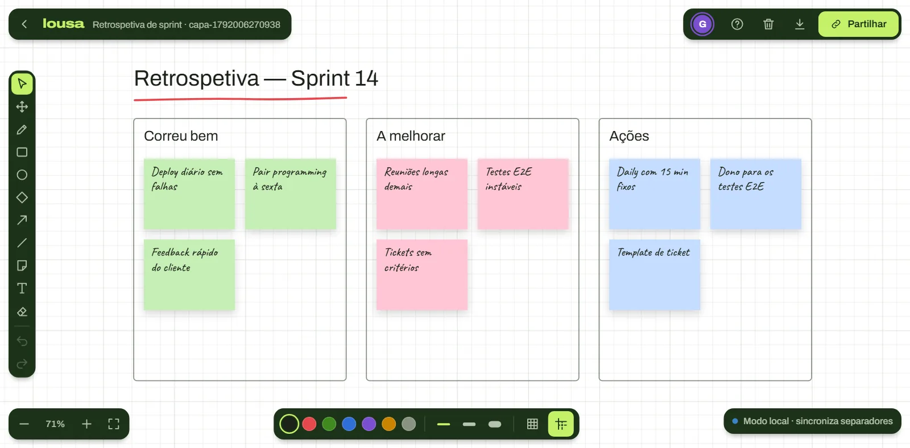

09 Quadro colaborativo
Lousa
Quadro branco colaborativo em tempo real, desenhado de raiz em Canvas 2D. Quem abre o mesmo link vê os traços, os post-its e os cursores dos outros a acontecer.

01 O projeto
O que é
Tem 14 templates editáveis em quatro áreas — do layout de armazém e rotas de entrega ao kanban, SWOT e Business Model Canvas. Alinhamento automático tipo Canva, guias, grupos, frente/trás e desfazer por pessoa.
O servidor sincroniza as salas por WebSockets. A demo publicada sincroniza os separadores do mesmo browser — abre o quadro em dois separadores e desenha num deles.
02 Funcionalidades
O que faz
- Desenho livre, formas, setas, texto e post-its
- Cursores e alterações dos outros em tempo real
- 14 templates em quatro áreas
- Alinhamento automático, guias e grupos
- Desfazer e refazer por pessoa
- Exportação para PNG e atalhos de teclado
03 Tecnologia
A stack
Frontend
- React 19interface e ferramentas
- Canvas 2Dmotor de desenho feito à mão
- Vite 7build e desenvolvimento
Tempo real
- Node + wsservidor de WebSockets
- Express 5saúde do servidor e entrega do build
- BroadcastChannelsincronização entre separadores na demo
Arquitetura
- npm workspacesfrontend, backend e código partilhado
- Protocolo partilhadoo mesmo código valida no cliente e no servidor
Infra e qualidade
- Vercelalojamento da demo
- Vitesttestes nos três workspaces
- ESLint + Prettierlint e formatação
04 Porquê assim
Decisões técnicas
Nada da rede entra sem validação
Tudo o que chega — do servidor ou de outro separador — passa pelo mesmo validador antes de tocar no quadro.
Transporte trocável
Os componentes não sabem se estão ligados por WebSocket ou entre separadores. Um único ponto de ligação decide.
Servidor com limites
Origens autorizadas, limites por IP, teto de memória por sala e cabeçalhos de segurança num só sítio.